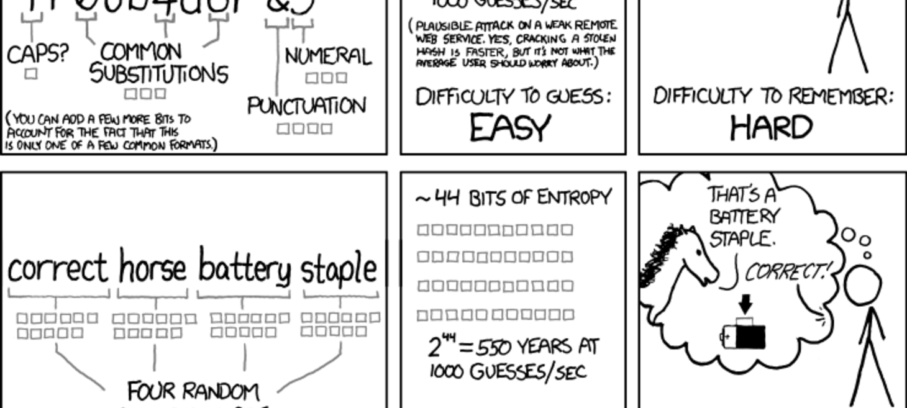
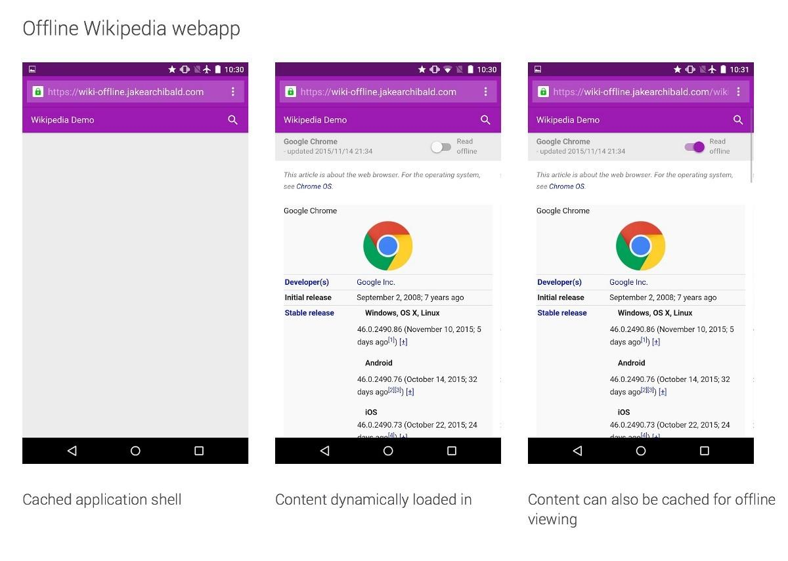

Hello World
CodeTengu Weekly 碼天狗週刊
CodeTengu Weekly 會在 GMT+8 時區的每個禮拜一早上 10:00 出刊，每一期會從目前的 curator 名單中選出三位來負責當期的內容，每一位 curator 各自負責不同的領域，如果你在這一期沒有看到自已感興趣的東西，說不定下一期就會有了。
你也可以瀏覽一下前幾期的內容，有價值的東西是不會過時的。
本期 curators：
- @fukuball - ImFukuball - 最近交了一個很正的女朋友，大家都很生氣
- @wancw - 求職中的 Full-stack Developer，意者內洽
- @adamp33 - 看棒球才是正職，副業是前端工程師
大家也可以 follow 一下 CodeTengu 的 Facebook 和 Twitter，有很多 Weekly 看不到的內容。有任何建議或疑問也可以來 Gitter 聊一聊，歡迎亂入 👺
 @fukuball
@fukuball

Zxcvbn-PHP - PHP 密碼強度估算程式
Zxcvbn-PHP 是基於 Dropbox 開源的 Zxcvbn JS 所翻譯成的 PHP 版本密碼強度估算程式，透過計算密碼的形式及複雜度，例如密碼和鍵盤位置是否有對應關係、密碼是否有規則性、比對常用字字典像是姓名、電影名稱等等，對使用者輸入的密碼計算強度分數。Zxcvbn 的特點不在於強制使用者要使用大小寫、符號、數字這種非人性化的規則來計算強度分數，其核心演算法主要專注於計算如果使用暴力法來猜密碼會需要多久的時間來得出密碼的強度分數，這樣的演算法有一個很棒的優點，它讓使用者可以得到容易記卻又不容易被暴力法猜中的密碼！
延伸閱讀：
10 Things Not To Do In PHP 7 - 10 件不要在 PHP 7 做的事情
PHP 7 將在這個月與各位碼農見面了，在迎接 PHP 7 之前本篇文章提出 10 件不要在 PHP 7 做的事情，為了節省時間可以看看 TL;DR：
- Do Not Use mysql_ Functions
- Do Not Write Wasteful Code
- Do Not Use PHP Close Tags At The End Of A file
- Do Not Pass By Reference If Not Needed
- Do Not Perform Queries In A Loop
- Do Not Use * In SQL Queries
- Do Not Trust User Input
- Do Not Try To Be Clever
- Do Not Reinvent The Wheel
- Do Not Neglect Other Languages
SQL Schema Naming Conventions - SQL 結構命名慣例探討
“There are only two hard things in Computer Science: cache invalidation and naming things.” 本篇文章所要討論的就是其中一個難題：如何為 SQL 結構的資料表、欄位等等命名？本篇作者先是在 Twitter 上詢問一些問題徵詢專業人士的解答，收集這些解答之後再進行一些省思及討論，有些觀點值得一看！
延伸閱讀：
Regressing Images - 用機器學習演算法來畫圖
迴歸分析（Regression）是機器學習中常見的一種方法，我們可以利用迴歸分析讓電腦從鮭魚的年齡及重量去學習如何預測鮭魚的長度。但如果把這樣的方法用來讓電腦學習畫圖那會得到什麼樣的結果呢？比如我們將圖片的每個像素當成是我們要預測的學習問題，然後像素的 (x, y) 位置作為學習的依據，讓電腦利用迴歸分析學習預測某些像素的（r, g, b）值重畫一張圖，這樣重畫的圖會長什麼樣子呢？本篇文章做了一些有趣的實驗，介紹了 convnetjs 及 Stylize 這兩個有趣的開源專案，我們也可以從這樣的應用中去了解迴歸分析這個機器學習演算法。
對了，這個項目的主題圖就是使用 Stylize 重畫 Fallout 4 動力裝甲，有種介於抽象畫與印象畫之間的感覺，很酷吧！
林軒田教授機器學習基石 Machine Learning Foundations 第六講學習筆記
在第五講中我們了解了如何將 PLA 無限的假設集合透過 Dichotomy、Break Point 這樣的概念轉換成有限的集合，在第六講中我們將更進一步去推導其實這個假設集合的成長函數會是一個多項式，如此我們就可以完全相信 PLA 機器學習方法的確在數學理論上是可行的了。
@adamp33

Progressive Web App
Chrome Dev Conf 這週剛結束，研討會議程中有許多令人興奮的主題，例如深入探討 RAIL（Responss, Animation, Idle, Load）和 Progressive Web App。其中 Progressive Web App 用到 Service Worker 來管理 cache、network（類似 proxy），不但能有效管理 assets，還可以製作 offline web app 和大幅提升效能。
Addy Osmami 在他最近的文章中也提到 Progressive Web App 的概念，可以有效提升使用者體驗，讓載入速度更快。
你知道瀏覽器也有語音辨識 API 嗎？
語音辨識 Speech Recognition API 其實已經推出好一陣子了，目前只有在 Chrome 與 Oprea 上被實作，並且支援大多數語系。這一篇教你如何用語音辨識做出一個 audio player 播放器，讓你不用操作鍵盤也可以聲控，還可以和播放器對話。
國內的設計商品電子商務平台 Pinkoi 在搜尋欄上也有實作語音輸入功能，不妨玩玩看。
用 CSS 做出 LOMO 效果
CSS 的 filter （濾鏡）、blend （混色）越來越強大，相互搭配下可以創造出很有趣的影像處理效果，這一篇教學文告訴你如何利用 filter 和 blend 做出有暗角的 LOMO 相片和雙重曝光，相當有趣。
 @wancw
@wancw
Arrow This
ES6 新增的 arrow function 語法（=>）跟原本的 function 最大的差別就在於它沒有 this、arguments 等特殊變數。這篇文章列出各種狀況說明這項差別帶來的具體影響。
關於 JavaScript function 的 this 綁定規則可以參考作者 You Don't Know JS 書裡的 Determining this 小節。
A cartoon intro to Redux
這是小海在 CodeTengu Weekly#11 貼過的 A cartoon guide to Flux 續篇，同樣是以角色類比來說明 Redux 的運作流程。
Redux 一開始就是為了載入新 code 時不必重置 store 和可以回朔時光的除錯方式（1）而設計，這些根本是開發者夢寐以求的功能。看看 Redux-DevTools 的展示效果，你還猶豫什麼？
The Morning Paper
這則要介紹的不是一篇文章，而是一份資訊科學相關的日報。（是的，是日報！）作者每天會摘要一篇他覺得重要或是有趣的資訊領域論文。如果你有資訊焦慮症的話，不要考慮、立刻訂閱吧！
除了學習業界新的技術之外，看看學界的新研究也是滿有趣的。下面再推薦兩篇我從這裡讀到的有趣論文。
From APIs to Languages: Generalising Method Names
Function/method 除了具名參數、可省略參數、……之外，還可以有什麼形式？
這篇論文提出更有彈性的 method 宣告語法，讓宣告 method 就像是定義一個迷你語言。乍看之下有點像 Obj-C 的語法，但是多了可重複、可省略等構件。
如果能有這樣的語法，設計 DSL 就能變得更有彈性；但不知道實作 method 內容時又會衍生什麼新的難題？
Fast Database Restarts at Facebook
Facebook 內部使用的 in-memory database Scuba 通常包含 10~15 GB 的資料、一台機器則會有 120GB 左右的記憶體，不管是匯入、匯出或是建立冗餘 server 的成本都太高。
這篇文章說明他們如何利用 shared memory 來快速重啟這樣的 server，而不必每次都把資料寫入硬碟再讀出。